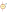

| Symbol |
Description |
| DIODE | Description: Diode, anode on pin 1, for simulation only!
Keys: simulation |
IAM | Description: Current source, AM
Keys: simulation amplitude modulated |
IDC | Description: Current source, DC
Keys: simulation |
IEXP | Description: Current source, exponential
Keys: simulation |
IPULSE | Description: Current source, pulse
Keys: simulation |
IPWL | Description: Current source, piece-wise linear
Keys: simulation |
ISFFM | Description: Current source, single-frequency FM
Keys: simulation frequency modulated |
ISIN | Description: Current source, sinusoidal
Keys: simulation |
ITRNOISE | Description: Current source, transient noise
Keys: simulation |
ITRRANDOM | Description: Current source, random noise
Keys: simulation |
OPAMP | Description: Operational amplifier, single, node sequence=1:+ 2:- 3:OUT 4:V+ 5:V-
Keys: simulation |
VAM | Description: Voltage source, AM
Keys: simulation amplitude modulated |

VDC | Description: Voltage source, DC
Keys: simulation |
VEXP | Description: Voltage source, exponential
Keys: simulation |
VPULSE | Description: Voltage source, pulse
Keys: simulation |
VPWL | Description: Voltage source, piece-wise linear
Keys: simulation |
VSFFM | Description: Voltage source, single-frequency FM
Keys: simulation frequency modulated |
VSIN | Description: Voltage source, sinusoidal
Keys: simulation |
VTRNOISE | Description: Voltage source, transient noise
Keys: simulation |
VTRRANDOM | Description: Voltage source, random noise
Keys: simulation |